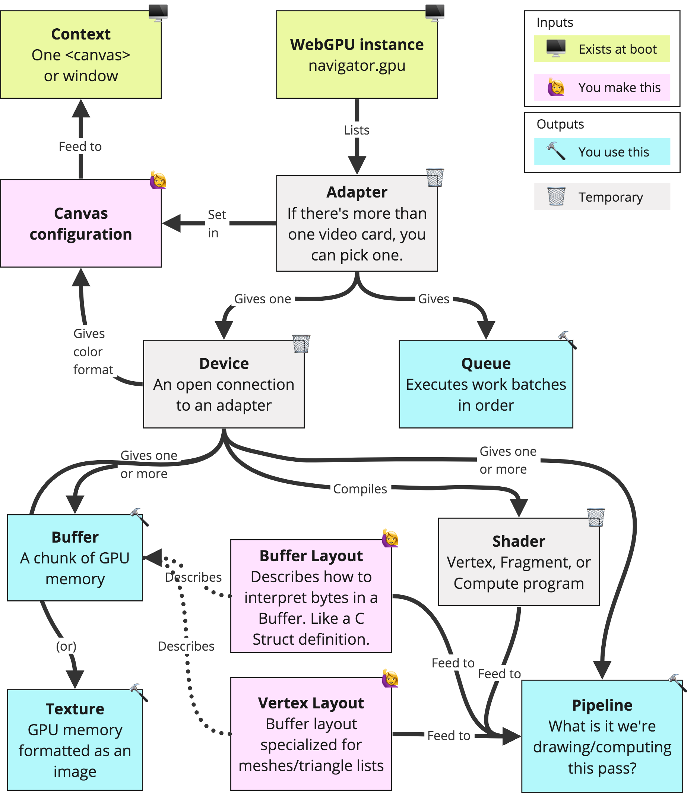
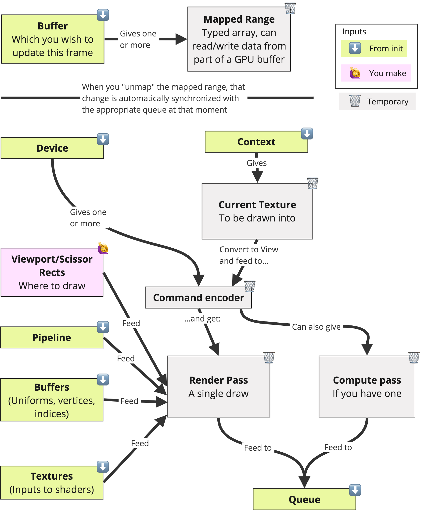

In this document, authored by Amir Sojoodi, I have jumped into the world of WebGPU compute and explore its potential for High-Performance Computing (HPC) and High-Throughput Computing (HTC) applications. It is based on my personal notes gathered during the development of a project at Distributive. The aim of this document is to provide readers with a clear and accessible tips and tricks to WebGPU compute, enabling them to harness its power for their own projects.
Now, I must admit, coming from an HPC background with expertise in technologies like CUDA, OpenMP, and MPI, I had underestimated the initial challenges of transitioning to the world of WebGPU and JavaScript. It's like switching from driving a Ferrari to a self balancing hoverboard! However, I've put in every ounce of effort to squeeze out every drop of performance potential from the WebGPU API in my own work, and I hope you can do the same!
Disclaimer: Please note that the content in this document primarily references the December 2022 draft of the WebGPU specification as published by the World Wide Web Consortium (W3C) at https://www.w3.org/TR/webgpu/. While the specification may have evolved since then, the fundamental concepts and principles discussed here remain relevant and applicable to understanding WebGPU compute.
Now, let's dive into the fascinating (and frustrating!) world of WebGPU compute!
So, what exactly is WebGPU compute? Well, it's a cutting-edge web technology that introduces a low-level, high-performance computing API for your favorite web browsers. Gone are the days when GPUs were only used for rendering jaw-dropping graphics. With WebGPU compute, developers like us can tap into the immense computational capabilities of GPUs for a wide range of tasks that go beyond just pixel-pushing.
But why is this such a big deal? Well, traditionally, if we wanted to leverage the full power of GPUs, we had to rely on platform-specific technologies like CUDA or OpenCL. Don't get me wrong, those technologies are absolute beasts in terms of power, but they often tied us down to a specific operating system or programming language. WebGPU compute, on the other hand, breaks down those barriers and brings GPU-accelerated computing to the web using a standardized API.
So, in summary, here are the benefits of utilizing WebGPU:
Now, before you get carried away, let me warn you: WebGPU compute isn't all rainbows and unicorns. As with any new technology, there are challenges to overcome. From mastering the intricacies of JavaScript to optimizing your code for parallel execution, you'll face a few hurdles along the way.
There are many great tutorials and manuals out there:
And the list goes on! Therefore, I won't bombard you with redundant details covered in the specification and other tutorials. I'll just provide you with a summary of the key notes that serve as handy reminders.
Let's familiarize ourselves with some key concepts
Let's dive into each of these key concepts.
The adapter is like the gateway to the GPU. It represents the physical GPU device available on the user's system. The device, on the other hand, is the driver that manages communication with the adapter. I stole this picture from Andi:

Adapter
GPUDevice
GPUQueue for executing commandsawait adapter.requestDevice(options);GPUAdapter.features
GPUAdapter.limits
maxBindGroups: 4
maxBindingsPerBindGroup: 640
maxBufferSize: 268435456
maxColorAttachments: 8
maxComputeInvocationsPerWorkgroup: 256
maxComputeWorkgroupSizeX: 256
maxComputeWorkgroupSizeY: 256
maxComputeWorkgroupSizeZ: 64
maxComputeWorkgroupStorageSize: 49152
maxComputeWorkgroupsPerDimension: 65535
maxDynamicStorageBuffersPerPipelineLayout: 4
maxDynamicUniformBuffersPerPipelineLayout: 8
maxInterStageShaderComponents: 60
maxInterStageShaderVariables: 16
maxSampledTexturesPerShaderStage: 16
maxSamplersPerShaderStage: 16
maxStorageBufferBindingSize: 4294967295
maxStorageBuffersPerShaderStage: 8
maxStorageTexturesPerShaderStage: 4
maxTextureArrayLayers: 256
maxTextureDimension1D: 8192
maxTextureDimension2D: 8192
maxTextureDimension3D: 2048
maxUniformBufferBindingSize: 65536
maxUniformBuffersPerShaderStage: 12
maxVertexAttributes: 16
maxVertexBufferArrayStride: 2048
maxVertexBuffers: 8
minStorageBufferOffsetAlignment: 256
minUniformBufferOffsetAlignment: 256
adapter.requestAdapterInfo()
Initialization is the process of setting up the WebGPU context, creating an adapter, and establishing a connection with the device. This is done by calling the navigator.gpu.requestAdapter() and adapter.requestDevice() methods. The requestAdapter() method returns a promise that resolves to an adapter object. The requestDevice() method returns a promise that resolves to a device object. Then the device object is used to create resources like buffers, textures, and pipelines.
let gpuDevice = null;
async function initializeWebGPU() {
// Check to ensure the user agent supports WebGPU.
if (!('gpu' in navigator)) {
console.error("User agent doesn't support WebGPU.");
return false;
}
// Request an adapter.
const gpuAdapter = await navigator.gpu.requestAdapter();
// requestAdapter may resolve with null if no suitable adapters are found.
if (!gpuAdapter) {
console.error('No WebGPU adapters found.');
return false;
}
// Request a device.
// Note that the promise will reject if invalid options are passed to the optional
// dictionary. To avoid the promise rejecting always check any features and limits
// against the adapters features and limits prior to calling requestDevice().
gpuDevice = await gpuAdapter.requestDevice();
// requestDevice will never return null, but if a valid device request can't be
// fulfilled for some reason it may resolve to a device which has already been lost.
// Additionally, devices can be lost at any time after creation for a variety of reasons
// (ie: browser resource management, driver updates), so it's a good idea to always
// handle lost devices gracefully.
gpuDevice.lost.then((info) => {
console.error(`WebGPU device was lost: ${info.message}`);
gpuDevice = null;
// Many causes for lost devices are transient, so applications should try getting a
// new device once a previous one has been lost unless the loss was caused by the
// application intentionally destroying the device. Note that any WebGPU resources
// created with the previous device (buffers, textures, etc) will need to be
// re-created with the new one.
if (info.reason !== 'destroyed') {
initializeWebGPU();
}
});
onWebGPUInitialized();
return true;
}
function onWebGPUInitialized() {
// Begin creating WebGPU resources here...
}
await initializeWebGPU();
Before we move forward, I think understanding about timeline is important. A computer system with a user agent at the front-end and GPU at the back-end has components working on different timelines in parallel:
Before we have our data neatly stored in a buffer, we should understand how mapping works before we access or update the buffers. This was a bit confusing for me in the beginning. I thought that once you create a buffer, you can access it directly, but that's not the case. You need to map the buffer to access it. Mapping a buffer is an asynchronous operation. An application can request to map a GPUBuffer so that they can access its content via ArrayBuffers that represent part of the GPUBuffer's allocations. Mapping a GPUBuffer is requested asynchronously with mapAsync() so that the user agent can ensure the GPU finished using the GPUBuffer before the application can access its content. A mapped GPUBuffer cannot be used by the GPU and must be unmapped using unmap() before work using it can be submitted to the Queue timeline. Take a look at the following table:
| Regular ArrayBuffer | Shared Memory | Mappable GPU buffer | Non-mappable GPU buffer (or texture) | |
|---|---|---|---|---|
| CPU, in the content process | Visible | Visible | Not visible | Not visible |
| CPU, in the GPU process | Not visible | Visible | Visible | Not visible |
| GPU | Not visible | Not visible | Visible | Visible |
Important point: GPUBuffer mapping is done as an ownership transfer between the CPU and the GPU. At each instant, only one of the two can access the buffer, so no race is possible. In summary, GPU cannot access mapped buffers, and CPU cannot access unmapped ones.
Now let's create some buffers!
Buffer creation involves allocating memory on the GPU and defining the properties of the buffer, such as its size, usage flags, and memory type. See the following example. I will talk about command encoders and command buffers later.
// Create a GPU buffer in a mapped state and an arrayBuffer for writing.
const gpuWriteBuffer = device.createBuffer({
mappedAtCreation: true,
size: 4,
usage: GPUBufferUsage.MAP_WRITE | GPUBufferUsage.COPY_SRC
});
const arrayBuffer = gpuWriteBuffer.getMappedRange();
// Write bytes to buffer.
new Uint8Array(arrayBuffer).set([0, 1, 2, 3]);
// At this point, the GPU buffer is mapped, meaning it is owned by the CPU,
// and it's accessible in read/write from JavaScript. So that the GPU can
// access it, it has to be unmapped which is as simple as calling
// gpuBuffer.unmap().
gpuWriteBuffer.unmap();
// Get a GPU buffer for reading in an unmapped state.
const gpuReadBuffer = device.createBuffer({
mappedAtCreation: false,
size: 4,
usage: GPUBufferUsage.COPY_DST | GPUBufferUsage.MAP_READ
});
// Encode commands for copying buffer to buffer.
const copyEncoder = device.createCommandEncoder();
copyEncoder.copyBufferToBuffer(
gpuWriteBuffer /* source buffer */, 0 /* source offset */,
gpuReadBuffer /* destination buffer */, 0 /* destination offset */,
4 /* size */
);
// Submit copy commands.
const copyCommands = copyEncoder.finish();
device.queue.submit([copyCommands]);
// Read buffer.
console.time("mapAsync");
await gpuReadBuffer.mapAsync(GPUMapMode.READ);
console.timeEnd("mapAsync");
const copyArrayBuffer = gpuReadBuffer.getMappedRange();
console.log(new Uint8Array(copyArrayBuffer));
gpuReadBuffer.unmap();
Structurally, the pipeline consists of a sequence of programmable stages (shaders) and fixed-function states, such as the blending modes.
GPURenderPipeline and GPUComputePipeline// You may create a pipeline layout manually (not advised really).
// Or you may create it automatically (see below)
const pipelineLayout = device.createPipelineLayout({
bindGroupLayouts: [bindGroupLayout],
});
const pipeline = device.createComputePipeline({
layout: pipelineLayout,
compute: {
module: shaderModule,
entryPoint: 'computeMain',
}
});
// But what is a bind group layout? See the following
A binding group layout defines the layout of a bind group. It is a sequence of entries, each of which specifies the binding number, visibility, and type of resource. And a bind group associates GPU buffers to the entries of the shaders (as bind group layout specifies).
In the example below, the bindGroupLayout expects two readonly storage buffers at numbered entry bindings 0, 1, and a storage buffer at 2 for the compute shader. The bindGroup on the other hand, defined for this bind group layout, associates GPU buffers to the entries: gpuBufferFirstMatrix to the binding 0, gpuBufferSecondMatrix to the binding 1, and resultMatrixBuffer to the binding 2.
const bindGroupLayout = device.createBindGroupLayout({
entries: [
{
binding: 0,
visibility: GPUShaderStage.COMPUTE,
buffer: {type: 'read-only-storage'}
},
{
binding: 1,
visibility: GPUShaderStage.COMPUTE,
buffer: {type: 'read-only-storage'}
},
{
binding: 2,
visibility: GPUShaderStage.COMPUTE,
buffer: {type: 'storage'}
}
]
});
const bindGroup = device.createBindGroup({
layout: bindGroupLayout,
entries: [
{binding: 0, resource: {buffer: gpuBufferFirstMatrix}},
{binding: 1, resource: {buffer: gpuBufferSecondMatrix}},
{binding: 2, resource: {buffer: resultMatrixBuffer}}
]
});
If you use the auto layout for the compute pipeline, it will only contain bindings for variables that are directly or transitively referenced by the shader's entry point function. If you don't reference the defined vars in the shader code, then they won't be added to the automatically generated bind group layout.
One quick way to reference the vars inside the shader is to add dummy referencing lines to the top of the shader's entry point:
@group(0) @binding(0) var<storage, read_write> results : array<i32>;
@group(0) @binding(1) var<storage, read_write> count : array<u32>;
@compute @workgroup_size(16, 16)
fn main(@builtin(workgroup_id) groupId : vec3<u32>,
@builtin(local_invocation_id) threadId: vec3<u32>,
@builtin(global_invocation_id) globalId : vec3<u32>) {
_ = &results;
_ = &count;
// This helped me a lot to set up the binding group with 'auto' layout.
In this way the bind group creation would be like the following:
const bindGroup = device.createBindGroup({
layout : pipeline.getBindGroupLayout(0),
entries: [
{binding : 0, resource : {buffer : results}},
{binding : 1, resource : {buffer : count}}
]
});
The commanders of the GPU army!
Command buffers are containers that hold instructions for the GPU to execute. They store commands such as binding resources, setting pipeline states, and dispatching compute operations.
Command buffers are pre-recorded lists of GPU commands that can be submitted to the GPUQueue for execution. Each GPU command represents a task to be performed on the GPU, such as setting state, drawing, copying resources, etc. Here are the steps to create a command buffer in WebGPU:
GPUCommandEncoder from the deviceGPUCommandBuffer when finished.Some notes:
GPUCommandBuffer can only be submitted once, at which point it becomes invalid. To reuse rendering commands across multiple submissions, use GPURenderBundle. (I have not tested this myself yet.)What is a Pass? A pass is a set of commands that are executed together. A pass can be a render pass or a compute pass. Obviously, a render pass is a set of commands that render to a texture and a compute pass is a set of commands that perform compute operations.
const commandEncoder = device.createCommandEncoder();
commandEncoder.copyBufferToBuffer(bufferA, 0,
bufferB, 0, 256);
const passEncoder = commandEncoder.beginComputePass();
passEncoder.setPipeline(pipeline);
passEncoder.setBindGroup(0, bindGroup);
passEncoder.dispatchWorkgroups(128);
passEncoder.end();
const commandBuffer = commandEncoder.finish();
device.queue.submit([commandBuffer]);
A workgroup is like a thread block in CUDA world. It is a group of threads that can share data through shared memory and synchronize if required.
// group_size => workgroup_size(Sx, Sy, Sz) (similar to thread block)
// group_count => dispatchWorkgroups(Nx, Ny, Nz) (similar to a grid)
// Total tasks => (Nx * Ny * Nz * Sx * Sy * Sz)
pass.dispatchWorkgroups(group_count[0], group_count[1], group_count[2]);
// In the shader module you can have optional built-in variables
// to get the workgroup and thread IDs as follows:
@compute @workgroup_size(group_sizeX, group_sizeY, group_sizeZ)
fn main(@builtin(workgroup_id) groupId : vec3<u32>,
@builtin(local_invocation_id) threadId: vec3<u32>,
@builtin(global_invocation_id) globalId : vec3<u32>,
@builtin(num_workgroups) gridDim : vec3<u32>) {
// the shader code
The GPU needs an orderly queue to process commands. The queue is responsible for receiving command buffers and executing them in the order they were submitted. It ensures that the GPU follows a structured path.
GPUQueue, which is the only one available for now. But I hope in the future, there will be more queues for different purposes.device.queue.writeBuffer(buffer, 0, typedArray);
device.queue.writeTexture({ texture: dstTexture },
typedArray,
{ bytesPerRow: 256 },
{ width: 64, height: 64 });
After submitting command buffers to the queue, the queue will execute them in order. The queue will wait for the previous command buffer to finish before executing the next one. This is called implicit synchronization. After submitting tasks to the queue, the CPU can continue to do other work while the GPU is busy executing the commands. I think there are two ways to synchronize the tasks on the Queue:
// 1. Use the promise returned by the following function
await device.queue.onSubmittedWorkDone();
// 2. If there is any output results in the command buffer that you are
// waiting for, you can call the mapAsync and wait for its promise to resolve.
await results.mapAsync(GPUMapMode.READ);
Ok, now let's wrap up everything we have learned so far with a nice picture (again stolen from Andy):

device.createComputePipelineAsync({
compute: {
module: shaderModule,
entryPoint: 'computeMain'
}
}).then((pipeline) => {
const commandEncoder = device.createCommandEncoder();
const passEncoder = commandEncoder.beginComputePass();
passEncoder.setPipeline(pipeline);
passEncoder.setBindGroup(0, bindGroup);
passEncoder.dispatchWorkgroups(128);
passEncoder.end();
device.queue.submit([commandEncoder.finish()]);
});
const vertexBuffer = device.createBuffer({
label: 'Player vertices',
size: vertexData.byteLength,
usage: GPUBufferUsage.INDEX | GPUBufferUsage.COPY_DST,
});
const passEncoder = commandEncoder.beginRenderPass({
label: 'Primary render pass',
colorAttachments: [{
view: context.getCurrentTexture().createView(),
loadOp: 'clear',
clearValue: [0.0, 0.0, 0.0, 1.0],
storeOp: 'store',
}]
});
const commandEncoder = device.createCommandEncoder();
commandEncoder.pushDebugGroup('Main Render Loop');
commandEncoder.pushDebugGroup('Render Scene');
renderGameScene(commandEncoder);
commandEncoder.popDebugGroup();
commandEncoder.pushDebugGroup('Render UI');
renderGameUI(commandEncoder);
commandEncoder.popDebugGroup();
commandEncoder.popDebugGroup();
device.queue.submit([commandEncoder.finish()]);
Using error scopes to capture validation errors from a GPUDevice operation that may fail:
gpuDevice.pushErrorScope('validation');
let sampler = gpuDevice.createSampler({
maxAnisotropy: 0, // Invalid, maxAnisotropy must be at least 1.
});
gpuDevice.popErrorScope().then((error) => {
if (error) {
// There was an error creating the sampler, so discard it.
sampler = null;
console.error(`An error occured while creating sampler: ${error.message}`);
}
});
In this section I will talk about the following topics:
(will be updated)
Ordered to be neat!
Repos and examples:
Other resources: